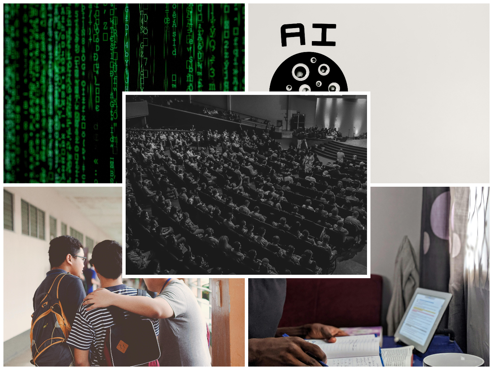

Pieteikšanās konkurss universitātēm notika elektroniski, bet tas nav nekas pārsteidzošs. Es nezināju, ko sagaidīt no studijām Datorikas fakultātē, bet pirmie iespaidi bija patīkami. Bija iespaidīgi ierasties auditorija ar vairāk, nekā 250 cilvēkiem, iepazīties ar citiem un uzzināt par katru no pasniedzējiem. E-klases vietā nu bija E-studijas, bet citādi, jāturpina mācīties, jeb studēt, kā mums pirmajā dienā iemācīja teikt. Universitātē noteikti bija lielāka brīvības sajūta, nekā skolā. Gribi – pieraksti, negribi – nevajag. Vari izmantot visas tīkamās ierīces, arī papīru un zīmuli, bet galvenais, ka izdarīts viss nepieciešamais. Jāatzīst, ka mākslīgā intelekta izplatīšanās arī ir mainījusi mācīšanās metodes, jo tas ļoti bieži kalpo kā noderīgs rīks, lai ko labāk izprastu vai sameklētu internetā apraktu informāciju.
